13 · 移动导航、主动探索与视觉语言导航
阅读目标：从占据栅格的贝叶斯更新出发，理解全局规划、局部避障和前沿探索的分工；再看语义导航（ObjectNav）与视觉语言导航（VLN）如何把“去厨房找杯子”这样的目标落到地图与动作上。
1. 任务谱系与评测
| 任务 | 目标给定方式 | 典型环境 / 数据 | 核心难点 |
|---|---|---|---|
| PointNav | 相对目标坐标 | Habitat / Gibson / MP3D | 无地图时的定位与避障 |
| ObjectNav | 物体类别，如“椅子” | HM3D、MP3D | 语义先验、探索效率 |
| ImageNav | 目标位置拍的一张图 | Habitat | 视角匹配 |
| VLN | 自然语言路线指令 | R2R、RxR、VLN-CE | 指令—视觉对齐、进度跟踪 |
| EQA / 主动问答 | 问题，需要先探索再回答 | EQA、OpenEQA | 何时停止探索 |
| 社交 / 动态导航 | 在行人中移动 | 仿真人群、实机 | 行为预测、礼让 |
指标：成功率 SR、SPL（成功按路径效率加权，见 08 章）、到目标距离 DTG；VLN 常加 nDTW 衡量路径与参考路径的贴合度：
LaTeX 源码
\operatorname{nDTW}(P,R)=\exp\left(-\frac{\operatorname{DTW}(P,R)}{|R|\cdot d_{th}}\right),\tag{13.1}DTW 为两条路径点序列在动态时间规整下的最小累计距离， 为参考路径点数， 为成功距离阈值（R2R 常用 3 m）。
2. 符号
| 符号 | 含义 | 约定 |
|---|---|---|
| 栅格 i 是否被占据 | 二值随机变量 | |
| 栅格 i 的对数几率 | ||
| 机器人位姿、传感器观测 | 位姿由 SLAM / 里程计给出 | |
| A* 已走代价、启发式 | 单位与边代价一致 | |
| 线速度、角速度指令 | m/s、rad/s，差速底盘 | |
| 前沿集合 | 已知空闲且邻接未知的栅格 |
3. 占据栅格：对数几率更新
推导 1 · 从贝叶斯公式到加法更新
假设栅格相互独立、地图静态，对单个栅格：
LaTeX 源码
P(m\mid z_{1:t})=\frac{P(z_t\mid m)P(m\mid z_{1:t-1})}{P(z_t\mid z_{1:t-1})}=\frac{P(m\mid z_t)P(z_t)}{P(m)}\cdot\frac{P(m\mid z_{1:t-1})}{P(z_t\mid z_{1:t-1})}.\tag{13.2}第二个等号对 再用一次贝叶斯公式。对 写同样的式子后两式相除，未知的归一化项 、 消去：
LaTeX 源码
\frac{P(m\mid z_{1:t})}{P(\neg m\mid z_{1:t})}=\frac{P(m\mid z_t)}{P(\neg m\mid z_t)}\cdot\frac{P(\neg m)}{P(m)}\cdot\frac{P(m\mid z_{1:t-1})}{P(\neg m\mid z_{1:t-1})}.\tag{13.3}取对数，乘法变加法：
LaTeX 源码
l_t=l_{t-1}+\underbrace{\log\frac{P(m\mid z_t)}{1-P(m\mid z_t)}}_{\text{逆传感器模型}}-l_0.\tag{13.4}数值例：先验 0.5（），激光击中某栅格时逆传感器模型给 ，每次加 。连续三次击中后 ，概率 。激光穿过的栅格用 减分。实现时把 l 截断在 ，保证动态物体离开后地图能更新。
4. 全局规划与代价地图
导航把栅格转为代价地图：障碍按机器人半径膨胀（inflation），离障碍越近代价越高，未知区域可视为高代价或不可通行。A* 弹出 最小的节点。
推导 2 · 可采纳启发式为何保证最优
若对所有节点 （真实剩余最短代价），称 h 可采纳。设最优路径代价 ，A* 以代价 的路径首次弹出目标。此时开表中一定还有最优路径上的某节点 n'（起点在最优路径上，且目标尚未经由最优路径弹出），它满足
LaTeX 源码
f(n')=g^*(n')+h(n')\le g^*(n')+h^*(n')=C^*<C=f(goal),\tag{13.5}与“目标的 f 最小才被弹出”矛盾。若还满足一致性 ，每个节点首次弹出时 g 已最优，无需重开节点。八邻域栅格上欧氏距离可采纳；曼哈顿距离在允许对角移动时会高估，不可采纳。
| 规划器 | 适用 | 说明 |
|---|---|---|
| Dijkstra / A* | 2D 栅格全局路径 | 启发式加速；分辨率决定精度与计算量 |
| Hybrid A* / 状态格 | 有最小转弯半径的车辆 | 搜索空间含朝向，满足非完整约束 |
| RRT / RRT* | 高维或连续空间 | 见 03 章；需后处理平滑 |
| D* Lite | 地图在线变化 | 增量重规划，复用之前搜索结果 |
5. 局部规划：DWA 与 MPC
全局路径只考虑静态地图；局部规划器以 10–20 Hz 处理动态障碍和动力学限制。DWA（动态窗口法）在当前速度可达的窗口内采样 ，前向模拟短时轨迹并评分：
LaTeX 源码
J(v,\omega)=\alpha\cdot\text{heading}+\beta\cdot\text{clearance}+\gamma\cdot\text{velocity},\quad(v,\omega)\in V_s\cap V_d\cap V_a.\tag{13.6}为速度上限， 为一个控制周期内加速度可达范围， 为能在碰撞前停下的安全速度集合。MPC 局部规划则显式优化一段控制序列并加约束（见 03 章式 3.10），对动态障碍可以加入预测轨迹。
6. 主动探索：前沿与信息增益
未知环境中，机器人需决定“下一步去哪看”。前沿（frontier）是已知空闲区与未知区的边界。
推导 3 · 前沿效用与信息增益
对每个前沿簇 f，估计到达代价 （A* 路径长度）和到达后可观测未知区域的信息增益。以栅格熵度量地图不确定性：
LaTeX 源码
\mathcal H(m)=-\sum_i\left[p_i\log p_i+(1-p_i)\log(1-p_i)\right],\quad U(f)=\mathbb E[\mathcal H(m)-\mathcal H(m\mid z_f)]-\lambda C(f).\tag{13.7}未知栅格 p=0.5 时熵最大（1 bit），所以信息增益可近似为传感器视野内未知栅格数。λ 权衡“走得远但看得多”与“就近探索”。这是 05 章式 (5.7) 主动观测原则在地图上的具体化。ObjectNav 中还可以把“目标物体出现在 f 附近的语义概率”乘进效用，例如“床更可能在卧室”。
7. 语义导航：模块化与端到端

查看 Mermaid 图源码
flowchart TD
O[RGB-D + 位姿] --> S[语义分割 / 开放词汇检测]
O --> M[占据地图]
S --> SM[俯视语义地图: 每类一个通道]
M --> SM
G[目标: 物体类别 / 语言] --> P[长期目标选择: 前沿 + 语义先验 / VLM 打分]
SM --> P
P --> A[A* 全局路径]
A --> L[局部规划 / 避障]
L --> R[底盘速度指令]
R --> O
SM --> T{目标已检测且足够近?}
T -->|是| ST[STOP]| 路线 | 代表 | 思路 |
|---|---|---|
| 端到端 RL | DD-PPO | 大规模分布式 PPO，RGB-D → 动作；PointNav 近乎完美，但语义任务样本效率低 |
| 模块化语义地图 | SemExp | 学习“长期目标”策略，配合地图与经典规划 |
| 开放词汇地图 | VLMaps、ConceptFusion | 把 CLIP / LSeg 等像素特征投影到地图，可用任意文本查询 |
| VLM 前沿打分 | VLFM | 用视觉语言模型对前沿方向计算“与目标相关”的价值图 |
| LLM 规划 | LM-Nav、NavGPT 类 | 语言模型分解指令、选择地标，几何由导航栈完成 |
开放词汇地图的查询：对地图栅格特征 与文本嵌入 计算余弦相似度，取 top 区域作为候选目标；多个文本提示做 softmax 对比（含“其他”“地面”等负类）可减少误检。
8. 视觉语言导航
VLN 输入指令如“出门左转，穿过走廊，在第二扇门前停下”。离散 VLN（R2R）在预先采样的全景节点图上跳转；连续 VLN-CE 输出底层速度动作，更接近实机。
推导 4 · 跨模态注意力与进度监督
指令 token 特征 ，当前全景 K 个候选方向的视觉特征 ，智能体状态 。文本注意力找到“当前该执行的子指令”，再用它为候选方向打分：
LaTeX 源码
\alpha_t=\operatorname{softmax}\left(\frac{Uh_t}{\sqrt d}\right),\quad\tilde u_t=\alpha_t^\top U,\quad P(a_t=k)=\operatorname{softmax}_k\left(v_{t,k}^\top W[\tilde u_t;h_t]\right).\tag{13.8}注意力分布在指令上的位置可视为“读到哪了”。进度监督额外回归 （剩余距离比例），帮助学会何时停止。现代方法用预训练多模态 Transformer、拓扑图记忆与航点预测器，把连续环境转化为“选择下一个航点”。
常见失败：转向词“左 / 右”与自我中心参考系混淆（见 05 章参考系），地标在当前视角不可见，过早停止或绕圈。分析时按指令子句对齐轨迹，标注失败发生在哪一步。
9. 局限与实践提示
- 仿真导航的碰撞模型、传感器噪声与实机差别大；Sim2Real 需在实机上重测 SR / SPL，并报告人工干预次数。
- 语义地图依赖定位精度，SLAM 漂移会把同一物体映射到多处；需要实例融合与回环。
- 开放词汇检测对少见物体和否定描述（“不是红色的那个”）不可靠，最终决策应结合几何验证。
- 动态环境中“地图静态”假设失效，需单独的动态障碍跟踪层。
来源：Thrun, Burgard & Fox《Probabilistic Robotics》（占据栅格、逆传感器模型）、Habitat、DD-PPO、SemExp、VLMaps、VLFM、R2R、VLN-CE、nDTW、Yamauchi (1997) 前沿探索、Fox et al. (1997) DWA。